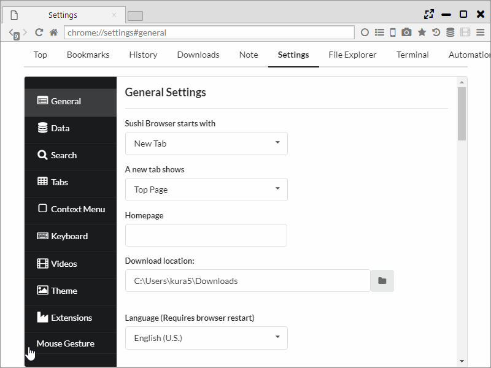

マウスジェスチャー
Chrome拡張の「Gestures for Google Chrome」を流用して、様々な操作にジェスチャーを割り当てることができます。
通常のChromeとは違い、管理ページでもマウスジェスチャーを使用することができます。
また、Mac/Linux版でも通常通り右クリックメニューが利用できます。
1. 設定
「設定 > Mouse Gesture」から設定が行なえます。
「Basics」タブでは、基本的な設定とスーパードラッグの有無を設定できます。
「Actions」タブでは、ジェスチャーに操作を割り当てることできます。
「add new gesture」で新しいジェスチャーが追加できます。

設定可能な操作は以下になります。
- None
- アクションなし
- ナビゲーション
- 戻る
- 最初のページに戻る
- 進む
- ...に移動する
- 上の階層に移動
- タブ操作
- 新しいタブを開く
- 新しいタブをバックグラウンドで開く
- ブランクページを開く
- ブランクページをバックグラウンドで開く
- ...を新しいタブに開く
- ...をバックグラウンドで開く
- 現在のタブを閉じる
- 現在のタブ以外を閉じる
- 現在のタブより右のタブを閉じる
- 現在のタブより左のタブを閉じる
- タブを固定
- タブの固定を解除
- タブの固定を切替
- 左のタブを閉じる
- 右のタブを閉じる
- タブを左に移動
- タブを右に移動
- タブをミュート
- タブを凍結
- タブを保護
- タブをロック
- このページをブックマーク
- ページのソースを表示
- クリップボードの URL を開く
- 新しいタブにClipboardのURLを貼り付けて移動
- Links
- リンクを新しいタブで開く
- リンクをバックグラウンドで開く
- ウィンドウ操作
- 新しいウィンドウを開く
- 現在のウィンドウを閉じる
- タブナビゲーション
- 右のタブを選択
- 左のタブを選択
- 右端のタブを選択
- 左端のタブを選択
- 最後に閉じたタブを開く
- 現在のタブを複製
- スクロール
- 上にスクロール
- 下にスクロール
- 右にスクロール
- 左にスクロール
- 下に半分スクロール
- 上に半分スクロール
- 下に1画面分スクロール
- 上に1画面分スクロール
- ページの一番上にスクロール
- ページの一番下にスクロール
- 読み込み
- 再読み込み
- キャッシュを破棄して再読み込み
- すべてのタブを再読み込み
- 中止
- Clipboard
- URLをコピー
- URLとタイトルをコピー
- URLとタイトルをHTMLとしてコピー
- URLとタイトルを...でコピー
- ScreenShot
- ページ全体のキャプチャをClipboardに保存
- ページ全体のキャプチャをJPEGで保存
- ページ全体のキャプチャをPNGで保存
- 選択範囲のキャプチャをClipboardに保存
- 選択範囲のキャプチャをJPEGで保存
- 選択範囲のキャプチャをPNGで保存
- その他
- 設定を開く
- ...のスクリプトを実行
- ページ内検索
- ブラウザを終了
- restart browser
- 左にパネルを分割
- 右にパネルを分割
- 上にパネルを分割
- 下にパネルを分割
- パネルの位置を入れ替え
- パネルの方向を切り替え
- 水平に整列
- 垂直に整列
- パネル間の同期スクロール切り替え
- サイドバーを切り替え
- ハイライト検索を有効にする
- モバイル表示に切り替え